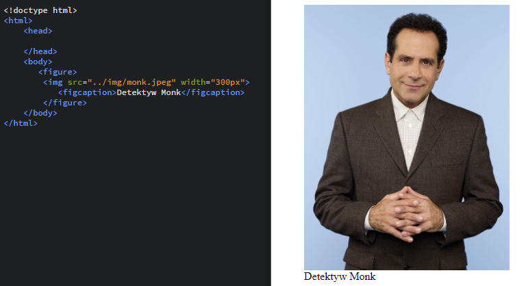
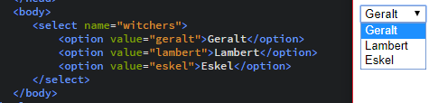

Warsztaty Webowe grupa średniozaawansowana
Na początek wykonamy kilka ćwiczeń odświerzających wiedzę o Gicie.
| Polecenie | Wynik |
|---|---|
| cd nazwa katalogu | przejście do danego katalogu |
| mkdir nazwa nowego katalogu | utworzenie katalogu o wybranej nazwie |
| pwd | pokazuje ścieżkę do obecnego katalogu w którym jesteśmy |
| cat nazwa pliku | wypisanie zawartości pliku |
| rmdir nazwa katalogu | usunięcie katalogu o wybranej nazwie |
| touch nazwa pliku | jeśli plik nie istnieje tworzymy go. (jest to również 'dotknięcie pliku', jeśli plik o nazwie istnieje zmienia ono jego datę edycji) |
| clear | wyczyszczenie okna terminala |
| cd .. | wejście do katalogu wyżej |
| echo treść pliku > nazwa pliku | wprowadzenie danych do pliku |
Wrzucając obrazek często chcemy, aby znalazł się pod nim podpis. Do tego najlepiej użyć znacznika figure wewnątrz którego umieszczami obraz img oraz znacznik figcaption wewnątrz którego wpisujemy podpis do obrazka
Stwórz w katalogu Zaj1 plik html o nazwie zad11.html. Za pomocą figure i figcaption dodaj 3 obrazki z podpisami.
Do czego służą formularze?
Wiemy jak to się odbywa po stronie użytkownika: najpierw wypełniamy pola, potem klikamy przycisk i strona wysyła gdzieś te dane. Po naszej stronie wygląda to tak: naciśnięcie guzika wywołuje skrypt, który przesyła nasze dane w miejsce docelowe, a następnie przesyła użytkownikowi informację o tym czy dane zostały wysłane poprawnie
Zaczynamy od znacznika form. Posiada on m.in. atrybut action w którym określamy w jaki sposób przesyłamy nasz formularz (może to być np. skrypt PHP). Dalej umieszczamy pola formularza (np. za pomocą znaczników input z określonymi atrybutami), oraz guzikiem uruchamiający skrypt i przesyłajacy dane wypełnione w formularzu.
Jak już wcześniej wspomniałem znacznikowi input można przypisać różne preferencje jeśli chodzi o dane (czy ma dotyczyć imienia, nazwiska, adresu e-mail). Są też inne rodzaje pól tekstowych które omówimy sobie poniżej
| Typy pól formularza | Opis |
|---|---|
<input type="text">
|
pole do tekstu (1 linia) |
<input type="radio">
|
Definiuje przycisk do wielu opcji, z których można wybrać jedną (radio button) |
<input type="submit"> |
Definiuje przycisk do wysyłania formularza |
<input type="password"> |
pole tekstowe jest wykropkowane |
<input type="reset"> |
definiuje guzik, który resetuje pola tekstowe formularza |
<input type="checkbox"> |
Definiuje przycisk do wielu opcji, z których można wybrać wiele |
<input type="color"> |
Pozwala wybrać kolor z palety wielu kolorów przykład (Nie wspierana przez wiele przeglądarek!) |
<input type="date"> |
Pozwala wybrać datę (na różne sposoby w zależności od przeglądarki) przykład (Nie wspierana przez niektóre przeglądarki!) |
<input type="date"> |
Pozwala wybrać datę (na różne sposoby w zależności od przeglądarki) przykład (Nie wspierana przez niektóre przeglądarki!) |
<input type="email"> |
zapamiętuje i podopowiada emaile, jeśli wprowadzaliśmy je gdzieś na innych stronach (Nie wspierana przez niektóre przeglądarki!) |
<input type="time"> |
możemy wybrać sobie godzinę (Nie wspierana przez niektóre przeglądarki!) |
Atrybut value pozwala nam wpisać w input domyślną wartość (a w przypadku color, kolor w zapisie heksadecymalnym). Atrybut placeholder wpisuje "przenikającą" wartość
Atrybuty select i option wyświtlają nam listę wyboru. Na przykładzie wygląda to tak:
Dodatkowo znacznik select posiada atrybut size, który pozwala określić ile elementów listy się wyświetla
Znacznik textarea pozwala na utworzenie pola tekstowego, przy którym mamy kontrolę nad jego wilkością. Atrybuty rows i cols pozwalają nam ustalić wysokość i szerokość (w literach)
Fieldset tworzy nam obszar, który spaja ramką ze sobą wszystkie elementy formularza i grupuje je. Fieldset poisada też ciekawe atrybuty takie jak: disabled - który blokuje wszystkie elementy formularza, form dzięki któremu możemy dodać do formularza elementy, które są poza nim, oraz name - ten atrybut posiada większość elementów, zastępuje id, kiedy korzystamy np ze skryptów php.
Znacznik legend łączy się ze znacznikiem fieldset, ponieważ ustala tytuł formularza
{kind=link}
{kind=link}